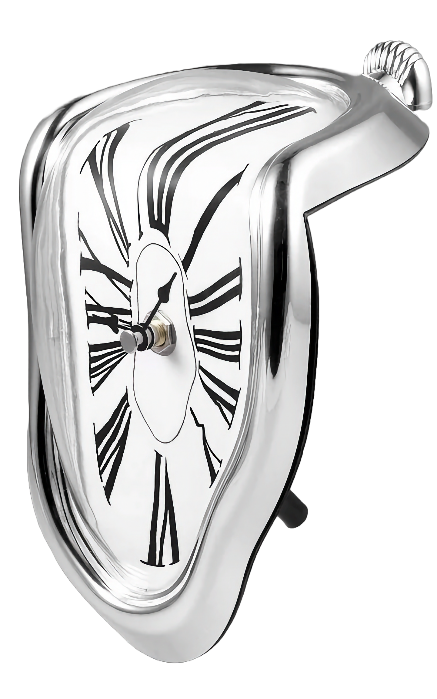
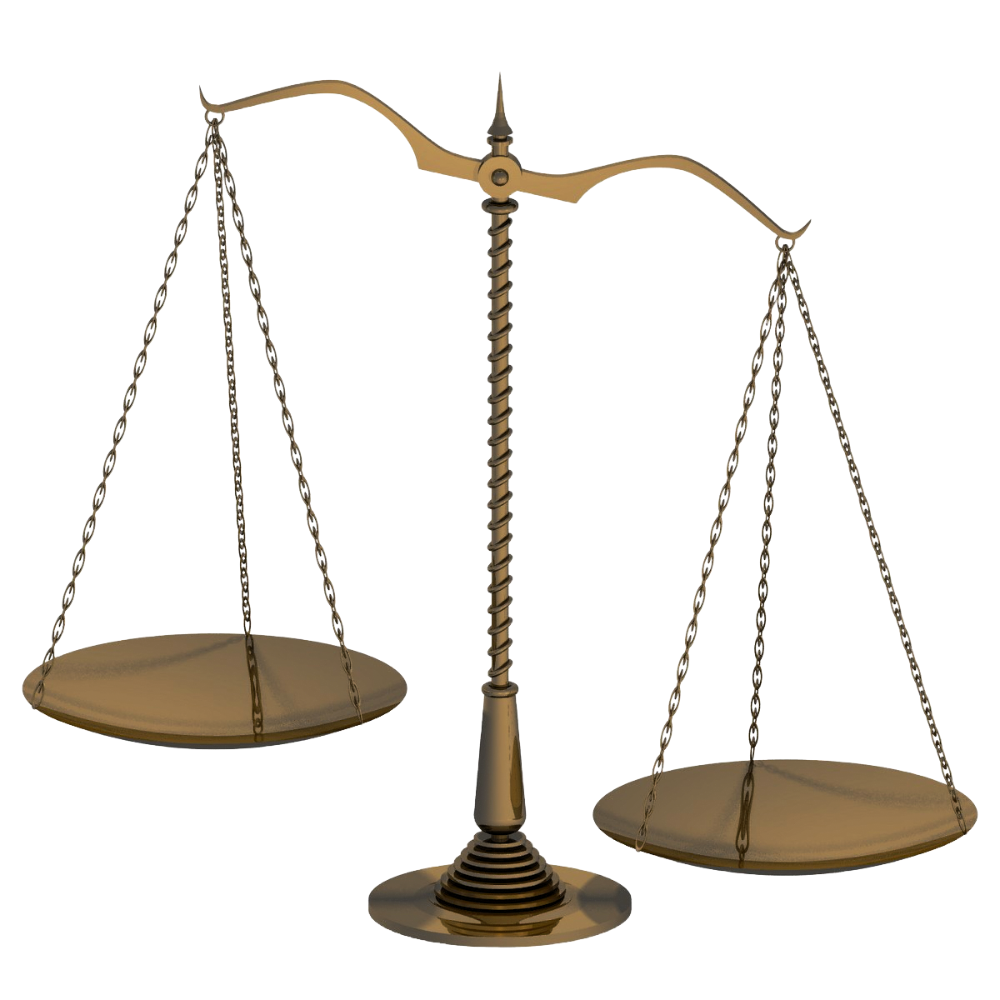

Використання LMS не лише не забирає багато часу, але й сприяє його заощадженню. Щонайменше, LMS може допомогти автоматизувати
процес оцінювання, зберігати дані про успішність учнів
та спростити відстеження їхнього прогресу.
Системи управління
навчанням (LMS)Чи
навчанням (LMS)
Чи
потрібна
викладачу
навчальна
платформа?
Що таке LMS?
LMS (Learning Management System) – це загальний термін, який охоплює всі види цифрових платформ, що використовуються для оптимізації навчального процесу (an umbrella term,
so to speak). Простими словами, LMS дозволяє викладачам створювати курси, завдання та взаємодіяти зі студентами онлайн.
Це ж займає купу часу, мабуть...

LMS – екзоскелет викладача

Так само, як екзоскелет полегшує фізичні завдання, LMS допомагає викладачам в організації навчання. Зокрема, з LMS можна ефективно організовувати навчальні матеріали та використовувати додаткові інструменти для збагачення навчального процесу.
LMS – це якась новинка?
Насправді, перші LMS були створені, коли по Землі ще динозаври ходили! Ну, майже... Найпопулярнішою на сьогодні LMS є Moodle. Перша версія Moodle вийшла у 2002 році. На жаль, більшість викладачів не були готові до переходу на онлайн-формат у 2020 році і ще не встигли його повноцінно освоїти.
Підіб'ємо підсумки
LMS – це високоефективні інструменти для викладачів, які 1 дозволяють викладачам створювати курси, завдання та взаємодіяти зі студентами онлайн,
2 автоматизувати
процес оцінювання, зберігати дані про успішність учнів
та спростити відстеження їхнього прогресу, а також 3 ефективно організовувати навчальні матеріали та використовувати додаткові інструменти для збагачення навчального процесу.
Вибір за вами

У цьому пості я висвітлив ключові переваги використання LMS, але вирішувати вам. Моя мета – демонструвати вам у цьому блозі, як ефективно працювати з LMS, щоб допомогти вам зробити обдуманий і виважений вибір, а також полегшити ваш шлях до використання LMS.
Дякую за увагу!
Наступні кроки:
Зворотний зв'язок:
| | |
|---|---|
| Напиши коментар | Пиши в директ |